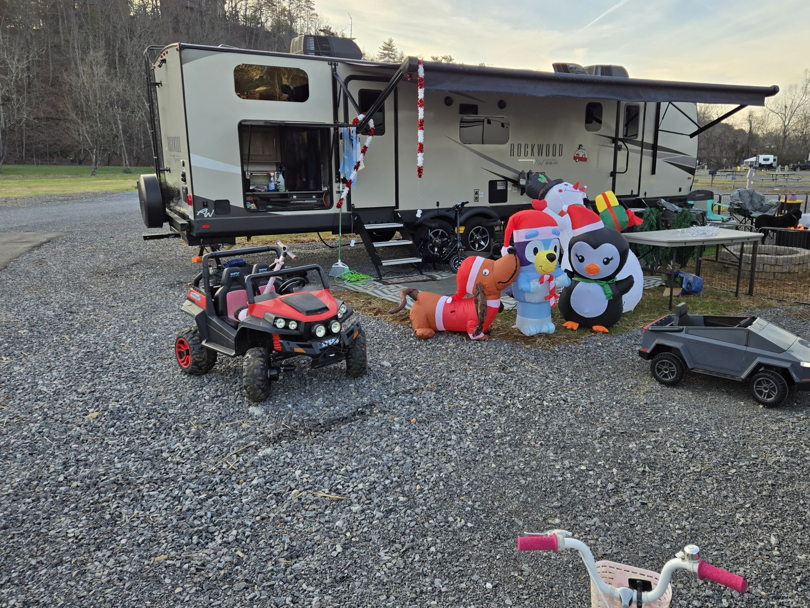
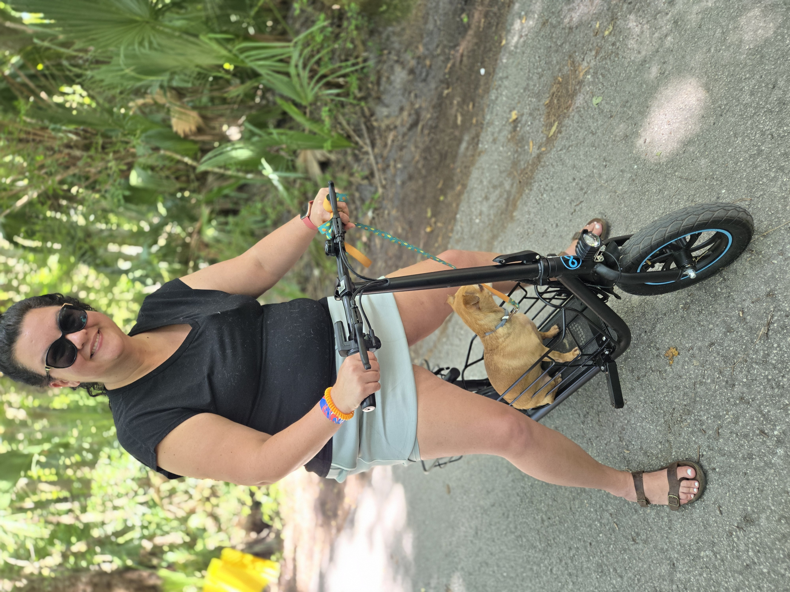
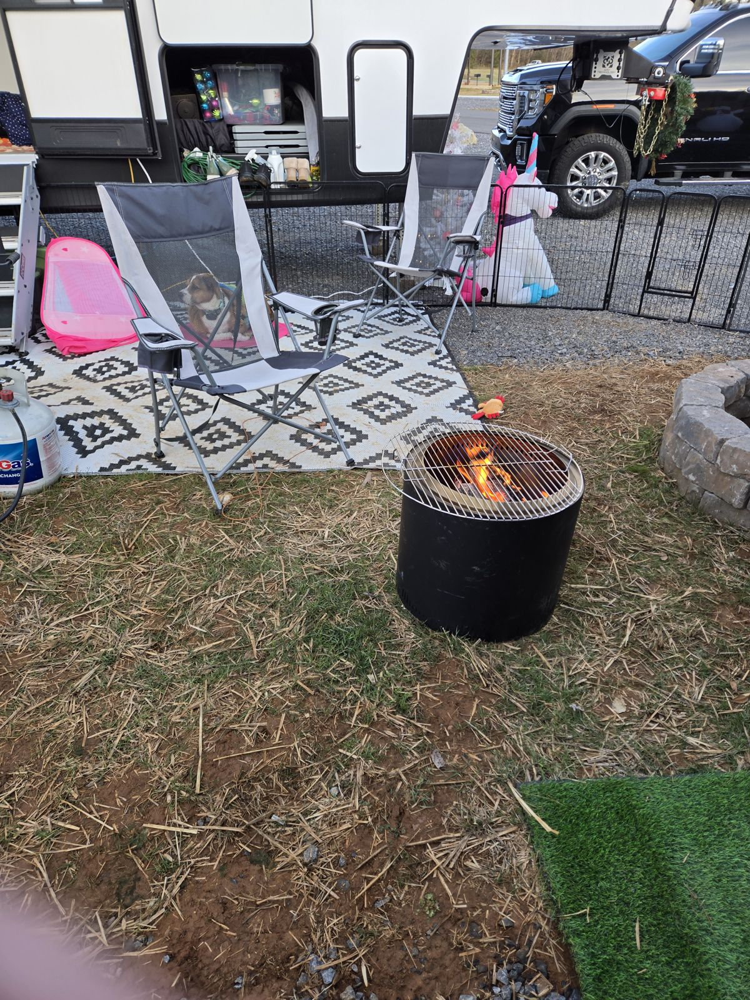
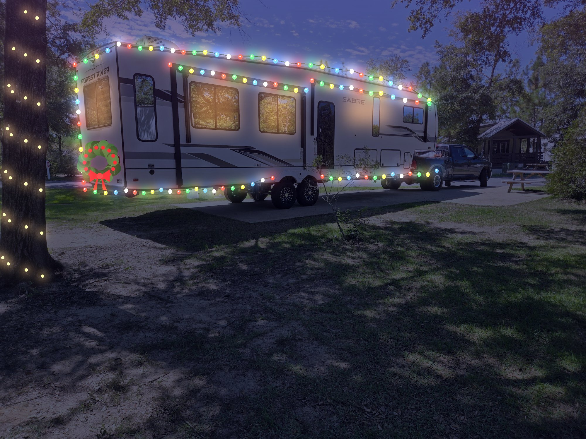
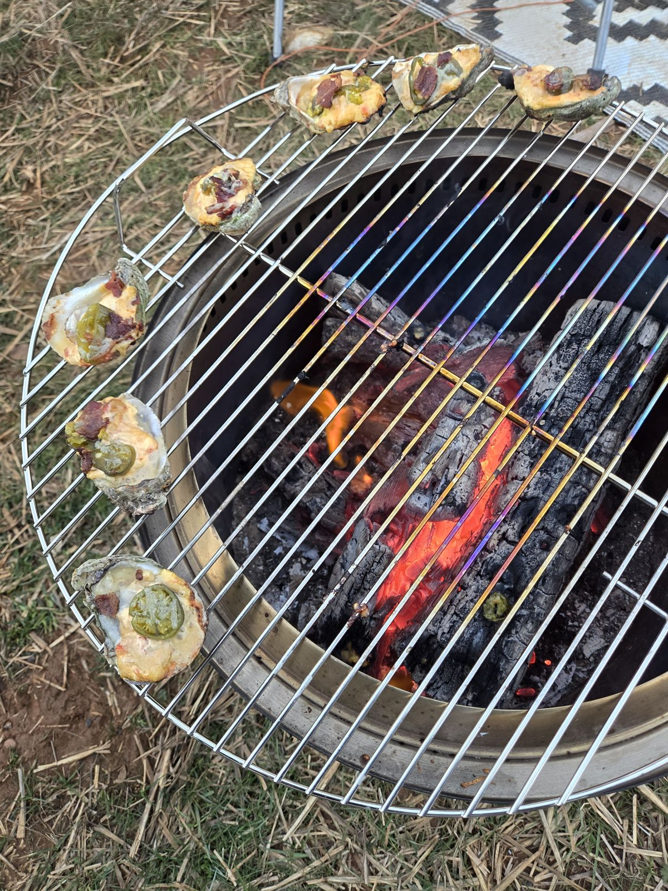
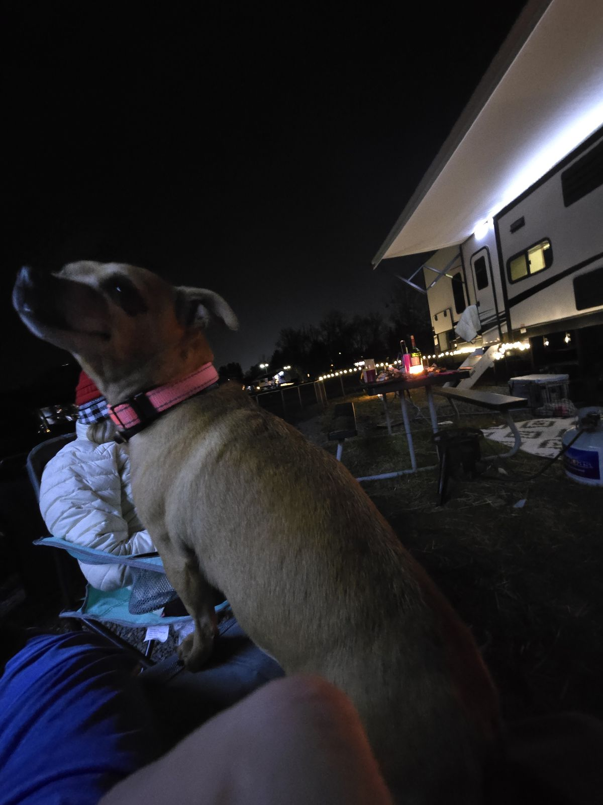
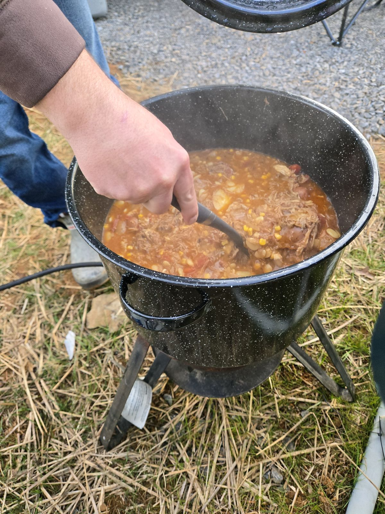
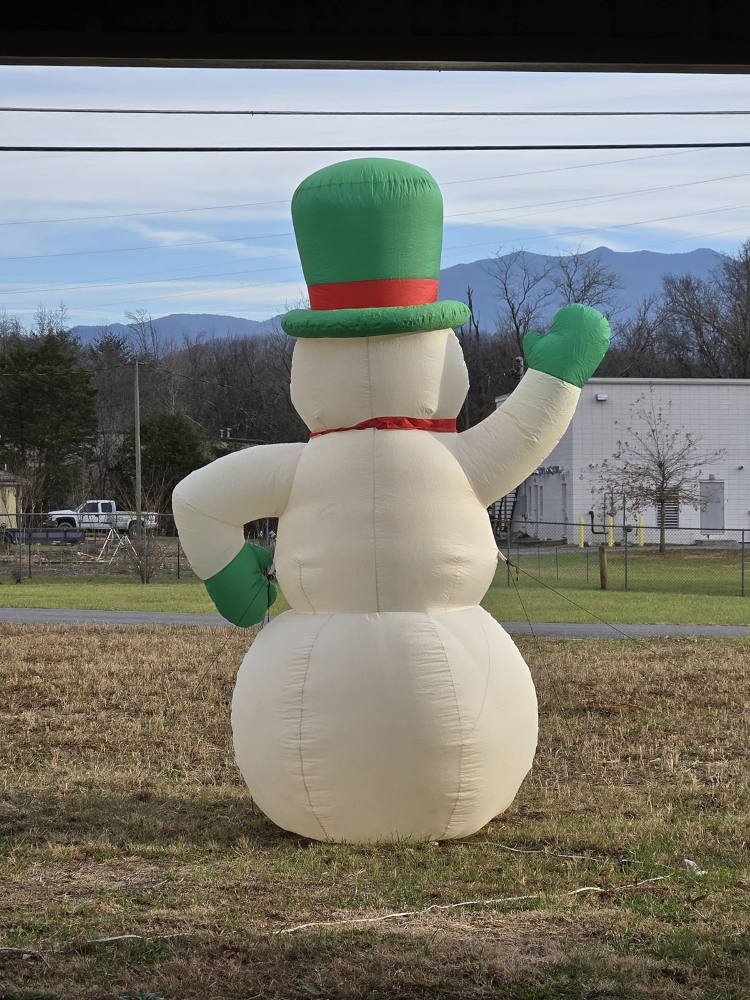
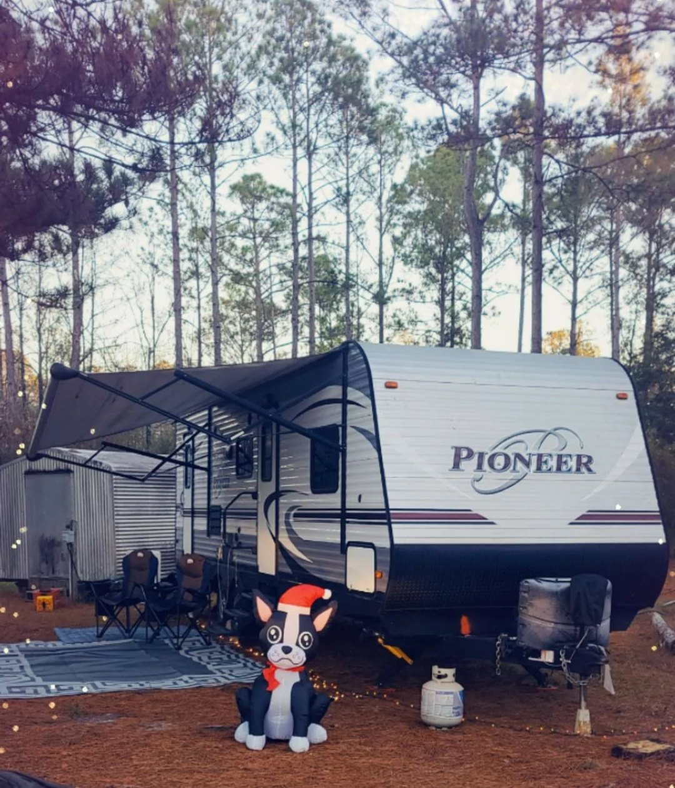
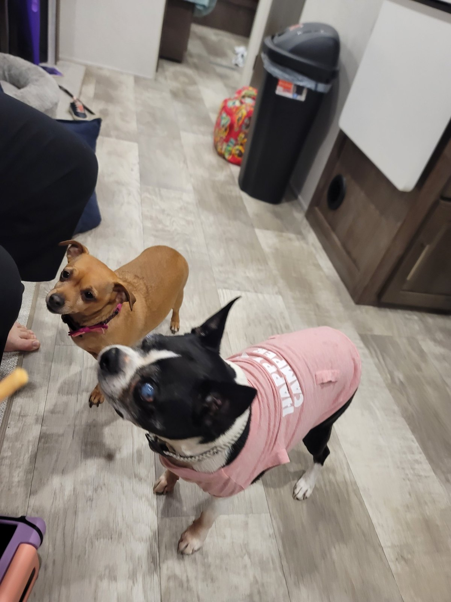

16 Gifts for RV Families That Actually Get Used
No gimmicks or gadgets that end up in a drawer. This is the gear that earns its spot in our camper every trip, plus a couple of things we're hoping show up under our own tree.

Disclosure: This post contains affiliate links. If you buy through our links we may earn a small commission at no extra cost to you. Almost everything here is gear we own and use. The one thing we don't own yet is clearly marked.
One Christmas we spent the holiday in our camper in the Tennessee mountains: inflatables on the gravel, oysters on the fire pit, and the dogs supervising every bite. It reminded us that the best camping gifts aren't fancy. They're the things that make the campsite feel like home a little faster.
So here's our honest list, sorted by who you're shopping for. If someone in your life camps, at least one of these will get used on their very next trip.
The big gift
If you're going in together as a family, or it's the gift of the year, these are the ones that change how someone camps.

1.Oupes Mega 1 Power Station
What we run in the Sabre: the fridge, James's CPAP, and every device we own, with no generator noise. It also covers you during a power outage at home.
Check price
2.Gyroor C1S Seated E-Scooter
Big campgrounds are a lot of walking with a toddler. This folds into the truck bed and gets you to the pool, the bathhouse, and the camp store in no time.
Check price
3.Oupes Guardian
The big unit for long outages or real off-grid camping. We don't own this one yet. It's on our own list this year.
Check priceCampsite upgrades
Our goal at every site is to make the outside feel like a second living room. These do the heavy lifting.



4.Smokeless Fire Pit + Grill Grate
Less smoke in your eyes and in the camper. Add a grate on top and it becomes a grill. We chargrilled Christmas Eve oysters on ours.
Check price
5.Awning String Lights
The cheapest way to make a campsite feel cozy, and nobody trips over a dog leash in the dark.
Check price6.Reversible Outdoor RV Rug
Keeps most of the dirt, gravel, and pine needles out of the camper. Hose it off, roll it up, done.
Check price
7.Aluminum Roll-Up Table
Campground picnic tables are hit or miss. This rolls up small, sets up in a minute, and is our prep station every morning.
Check price8.Power Watchdog 50A Surge Protector
Not exciting to unwrap, but bad campground power can fry thousands in appliances. Every RVer should have one.
Check priceFor the camp cook
We cook almost every meal at the campsite. These are the pieces that get used every single trip. Need ideas for what to cook on them? Our two-week RV meal plan has a free printable.


9.Flat-Top Camp Griddle
Pancakes, bacon, smash burgers, fried rice. If a camping family only gets one cooking gift, make it this.
Check price
10.Our Air Fryer
Our most-used appliance in the camper. Toddler chicken tenders in ten minutes, and no hot oven heating up the rig.
Check price
11.Outdoor Propane Burner + Big Pot
For stews, chili, and seafood boils that feed the whole campground loop. It's the reason everyone shows up at our site.
Check price
12.Big Berkey Water Filter
Our primary drinking water at home and on longer trips. Gravity-fed, so it needs no power.
Check priceFor the kids and the pups
The campground is basically a giant playground to our crew. These make it even better.


13.Holiday Inflatables
They pack down to almost nothing and plug into the camper. The kids at the campground came by every night to visit ours.
Check price
14.Light-Up Dog Collar
For night walks around the loop. You can see the pup, and so can everyone driving through the campground.
Check priceStocking stuffers
Small, useful, and they won't take up precious camper storage.
15.High-Velocity Fan
Uses a fraction of the power of the AC and makes a hot Southern night bearable. We ran several during our 11 days off-grid.
Check price16.Solar Camp Shower (5 Gal)
Fill it, leave it in the sun, and it's warm by afternoon. Great for sandy kids and muddy dogs.
Check priceNot sure what they already have?
Send them our Family & Pup RV Checklist and see what they haven't checked off. Or browse everything we use on our Gear page.
The best camping gift is the one that makes the campsite feel like home five minutes faster.
What's the best camping gift you've ever gotten? Tell us. We're always looking for the next thing that earns a spot in the camper.
— James & Mallory 🐾
Our Two-Week RV Meal Plan (Toddler-Approved, Free Printable)
Fourteen days of easy campsite breakfasts, lunches, and dinners for the griddle, the air fryer, and the fire pit.